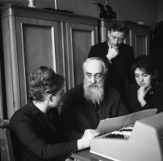

1 июня 1930 года на основе лесного факультета Белорусской
государственной сельскохозяйственной академии был
создан Лесной институт, торжественное открытие которого состоялось 1 октября в Гомеле. Перед новым
техническим высшим учреждением образования республики была поставлена задача по подготовке инженерных кадров
для лесного хозяйства, лесной и деревообрабатывающей промышленности
Белорусский лесотехнический институт
В 1934 году Лесной институт переименован в Белорусский лесотехнический институт, и в 1935 году ему
присвоеноимя
С. М. Кирова.
В связи с началом Великой Отечественной войны в 1941 году институт был эвакуирован в Свердловск и включен в
состав Уральского лесотехнического института. После освобождения Гомеля в 1944 году от немецко-фашистских
захватчиков институт вернулся в Беларусь. В августе 1946 года переехал в Минск.
В 1961 году в связи с быстрым развитием химической промышленности институту была поручена подготовка
специалистов с высшим образованием для химического комплекса, и он был переименован в Белорусский
технологический институт имени С. М. Кирова.

В год своего 50-летия за значительные достижения в подготовке инженерных и научных кадров, а также за
развитие
научных исследований БТИ имени С. М. Кирова Указом Президиума Верховного Совета СССР от 20 октября 1980 года
был
награжден орденом Трудового Красного Знамени.
Награждение орденом Трудового Красного Знамени
В 1988 году за успехи в работе Совет Министров СССР включил институт в число ведущих вузов страны.
Настоящий расцвет технологического института начался в конце 1980-х годов: развивалась наука, открывались
новые специальности, улучшалась материальная база, укомплектовывались уникальным оборудованием лаборатории.
В 1993 году Правительство Беларуси приняло решение о переименовании института в Белорусский государственный
технологический университет.
Расширилась сфера технологических компетенций: университет начал подготовку специалистов в области
полиграфических производств и оборудования, обработки информации и издательского дела, нефтехимического
синтеза,
лаков и красок, промышленной экологии, биоэкологии, сертификации, автоматизации технологических процессов,
биотехнологии, лекарственных препаратов, парфюмерно-косметических продуктов, энергоэффективных технологий,
менеджмента, маркетинга и др.
В 2005 году Министерством образования Республики Беларусь университету присвоен статус ведущего высшего
учебного
заведения в лесной, химической и полиграфической областях.
В 2007 году решением Совета руководителей правительств Содружества Независимых Государств Белорусскому
государственному технологическому университету присвоен статус базового вуза СНГ по образованию в области
лесного хозяйства и лесной промышленности.
В 2009 году БГТУ первым среди учебных заведений страны ввел систему менеджмента качества образования,
которая
соответствует требованиям белорусской системы сертификации СТБ ISO 9001–2009 и немецкой системы сертификации
DIN
EN ISO 9001:2008.
В 2010 году университет отметил свой 80-летний юбилей, и за особые достижения в социально-культурном
развитии,
многолетнюю плодотворную деятельность по подготовке высококвалифицированных кадров награжден Почетным
государственным флагом Республики Беларусь.
20 апреля 2011 года Белорусскому государственному технологическому университету вручена Премия Правительства
Республики Беларусь за достижения в области качества.
В марте 2015 года БГТУ выдано свидетельство об аттестации временем на 5 лет и подтверждена его
государственная
аккредитация на соответствие типу университет.
11 апреля 2016 г. приказом № 112 ректора БГТУ Войтова И.В. факультет издательского дела и полиграфии
переименован в факультет принттехнологий и медиакоммуникаций.
В целях оптимизации управления образовательной и научной деятельностью, повышения уровня подготовки
специалистов
по иностранным языкам на базе кафедры иностранных языков создана кафедра межкультурных коммуникаций и
технического перевода (приказ ректора БГТУ Войтова И.В. от 26 апреля 2016 г. № 136).
3 ноября 2016 г. подписано Соглашение о сотрудничестве в области научно-технической и инновационной
деятельности, образования и подготовки кадров между НАН Беларуси и БГТУ.